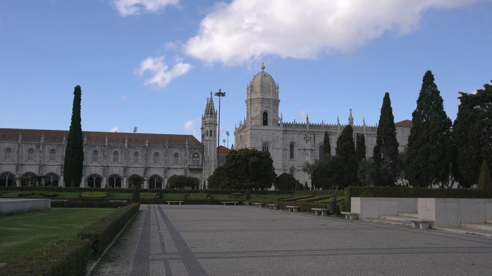

Início › Destinos › Lisboa › O que fecha cada dia
O que abre e o que fecha em Lisboa em cada dia da semana
Os 16 pontos do guia, de Belém a Sintra, dia por dia, e os feriados em que cada um fecha. Em Lisboa a segunda-feira é que estraga o roteiro. Horários apurados em 13 de setembro de 2026.
Apurado por Allan Vitor · @viagemnalupabr (abre em outra aba)

Storyblocks · licença royalty-free · SBI-357381505
Segunda-feira: fecham Mosteiro dos Jerónimos, Torre de Belém e Museu Nacional dos Coches. Terça-feira: fecham as galerias do Museu Calouste Gulbenkian. De quarta a domingo, nenhum dos pontos do guia fecha.
O Elevador de Santa Justa não funciona em dia nenhum.
Dia por dia
Segunda-feira
- Fecha: Mosteiro dos Jerónimos; Torre de Belém; Museu Nacional dos Coches.
- Abrem: 12 dos 16 pontos. O Elevador de Santa Justa segue fechado todos os dias.
- Em Belém, só o Padrão dos Descobrimentos abre.
Terça-feira
- Fecha: Museu Calouste Gulbenkian — as galerias; o jardim abre.
- Abrem: 14 dos 16 pontos. O Elevador de Santa Justa segue fechado todos os dias.
- O plano B da terça é o Oceanário, que abre todos os dias do ano.
Quarta-feira
- Nenhum dos pontos do guia fecha neste dia.
- Abrem: 15 dos 16 pontos. O Elevador de Santa Justa segue fechado todos os dias.
Quinta-feira
- Nenhum dos pontos do guia fecha neste dia.
- Abrem: 15 dos 16 pontos. O Elevador de Santa Justa segue fechado todos os dias.
Sexta-feira
- Nenhum dos pontos do guia fecha neste dia.
- Abrem: 15 dos 16 pontos. O Elevador de Santa Justa segue fechado todos os dias.
Sábado
- Nenhum dos pontos do guia fecha neste dia.
- Abrem: 15 dos 16 pontos. O Elevador de Santa Justa segue fechado todos os dias.
Domingo
- Nenhum dos pontos do guia fecha neste dia.
- Abrem: 15 dos 16 pontos. O Elevador de Santa Justa segue fechado todos os dias.
A semana inteira numa tabela
| Ponto | Seg | Ter | Qua | Qui | Sex | Sáb | Dom |
|---|---|---|---|---|---|---|---|
| Mosteiro dos Jerónimos | Fecha | Abre | Abre | Abre | Abre | Abre | Abre |
| Torre de Belém | Fecha | Abre | Abre | Abre | Abre | Abre | Abre |
| Padrão dos Descobrimentos | Abre | Abre | Abre | Abre | Abre | Abre | Abre |
| Museu Nacional dos Coches | Fecha | Abre | Abre | Abre | Abre | Abre | Abre |
| Castelo de São Jorge | Abre | Abre | Abre | Abre | Abre | Abre | Abre |
| Elevador de Santa Justa | Fecha | Fecha | Fecha | Fecha | Fecha | Fecha | Fecha |
| Praça do Comércio e o Arco da Rua Augusta | Abre | Abre | Abre | Abre | Abre | Abre | Abre |
| Miradouros de Alfama | Abre | Abre | Abre | Abre | Abre | Abre | Abre |
| Elétrico 28 | Abre | Abre | Abre | Abre | Abre | Abre | Abre |
| Museu Calouste Gulbenkian | Abre | Fecha | Abre | Abre | Abre | Abre | Abre |
| Oceanário de Lisboa | Abre | Abre | Abre | Abre | Abre | Abre | Abre |
| Time Out Market | Abre | Abre | Abre | Abre | Abre | Abre | Abre |
| Palácio Nacional da Pena | Abre | Abre | Abre | Abre | Abre | Abre | Abre |
| Quinta da Regaleira | Abre | Abre | Abre | Abre | Abre | Abre | Abre |
| Castelo dos Mouros | Abre | Abre | Abre | Abre | Abre | Abre | Abre |
| Cabo da Roca e Cascais | Abre | Abre | Abre | Abre | Abre | Abre | Abre |
Os feriados em que cada um fecha
- Mosteiro dos Jerónimos: 1 de janeiro, domingo de Páscoa, 1 de maio, 13 de junho (Santo António, feriado municipal de Lisboa) e 25 de dezembro.
- Torre de Belém: 1 de janeiro, domingo de Páscoa, 1 de maio, 13 de junho e 25 de dezembro.
- Padrão dos Descobrimentos: 1 de janeiro, 1 de maio, 24, 25 e 31 de dezembro.
- Museu Nacional dos Coches: 1 de janeiro, 1 de maio, domingo de Páscoa, 13 de junho e 25 de dezembro.
- Castelo de São Jorge: 1 de janeiro, 1 de maio, 24, 25 e 31 de dezembro.
- Museu Calouste Gulbenkian: 1 de janeiro, domingo de Páscoa, 1 de maio, 24 e 25 de dezembro.
- Quinta da Regaleira: 1 de janeiro, 24, 25 e 31 de dezembro.
- Cabo da Roca e Cascais: Encerra no Natal e no Ano Novo.
Os outros pontos não publicam feriado de encerramento, ou não fecham. Pena e Castelo dos Mouros: a lista de feriados não foi encontrada.
O que pode fechar em qualquer dia
- Torre de Belém — teto de 900 visitantes por dia.
- Museu Nacional dos Coches — o Picadeiro Real está fechado para obras.
- Castelo de São Jorge — os adarves e torres fecham antes do monumento.
- Praça do Comércio e o Arco da Rua Augusta — a subida ao arco tem horário, e as fontes divergem.
- Elétrico 28 — o percurso está cortado: só circula entre Graça e Prazeres.
- Time Out Market — as páginas oficiais divergem no horário da noite.
- Palácio Nacional da Pena — fecha com risco de incêndio ou mau tempo.
- Castelo dos Mouros — fecha com risco de incêndio ou mau tempo.
- Cabo da Roca e Cascais — o farol fecha às 17h30.
O que mais se pergunta sobre o que fecha em Lisboa
O que fecha na segunda-feira em Lisboa?
Mosteiro dos Jerónimos, Torre de Belém e Museu Nacional dos Coches. Em Belém, só o Padrão dos Descobrimentos abre. Fora de Belém, Castelo de São Jorge, Oceanário, Gulbenkian e Sintra abrem.
O que fecha na terça-feira em Lisboa?
As galerias do Museu Calouste Gulbenkian; o jardim continua aberto. O Oceanário, que abre todos os dias do ano, é o plano B.
Qual o melhor dia para visitar Belém?
De terça a domingo os quatro monumentos de Belém abrem. Na segunda, Mosteiro dos Jerónimos, Torre de Belém e Museu Nacional dos Coches fecham.
O que abre no feriado em Lisboa?
Depende da casa: cada uma tem o seu calendário. O Oceanário não tem feriado de encerramento; Jerónimos, Torre e Coches fecham em 1 de janeiro, domingo de Páscoa, 1 de maio, 13 de junho e 25 de dezembro. A lista de cada ponto está nesta página.
As outras páginas de Lisboa
Hospedagem
A hospedagem e a passagem não entram nos preços desta página; a ficha de custos traz as duas, com a data da apuração.
Este link dá comissão ao site. Você paga o mesmo preço que pagaria indo direto, e a comissão não altera nenhum número do site. Como isso funciona.